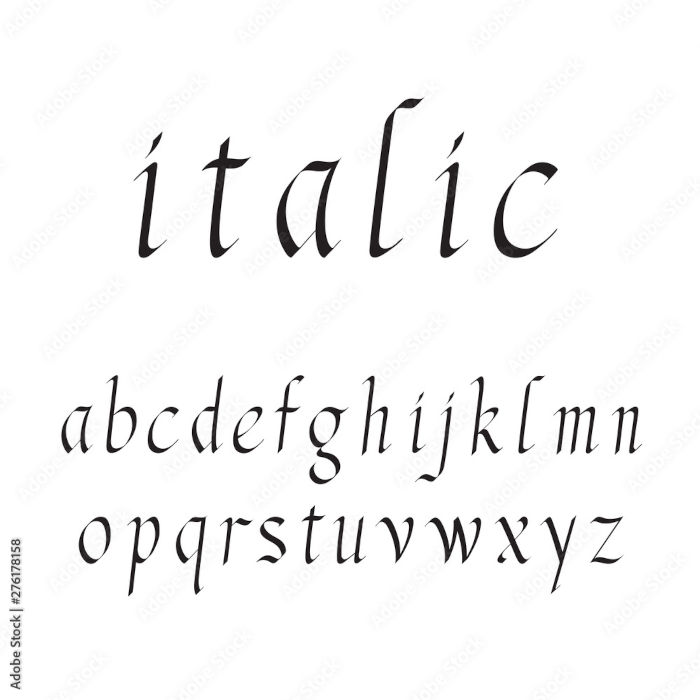

Para deixar o termo em negrito, basta usar as tags: "<b>"(forma não semântica) e "<strong>"(forma semântica).
Ex
A palavra "negrito",estará em negrito.
O termo em "destaque",também estará em negrito.
Para deixar o termo em Itálico, basta usar as tags: "<i>"(não semântica) e "<em>"(semântica).
Ex
A palavra "itálico", estará em itálico.
O termo, que deverá estar em enfase, esta em itálico.
Pode-se, também, marcar um texto, com a tag "<mark>"

Ex
Uma parte deste texto, estará marcado.
Para deixar o texto pequeno, basta usar a tag "<small>"
Ex
Parte deste texto, estará pequeno.
Para criar um texto deletado/riscado, basta usar a tag "<del>"
Ex
Parte deste texto, estará deletado/riscado.
Para indicar que o texto foi inserido recentemente, de forma sublinhada, basta usar a tag "<ins>"
Ex
Parte deste texto, estará sublinhado.
Para usar de forma não semântica, basta usar a tag "<u>"
Ex
Parte deste texto, também estará sublinhado.
Para escrever coisas do gênero: x4+x+20, de forma correta, basta usar a tag "<sup>"
Ex
Sem a tag: x4+x+20
Com a tag: x4+x+20
Para escrever coisas do gênero: H2O, de forma correta, basta usar a tag "<sub>"
Ex
Sem a tag: H2O
Com a tag: H2O